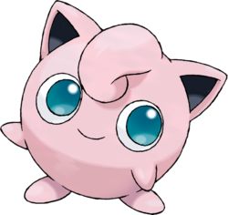

Pokédex

Le Pokédex est un objet technologique fictif de l'univers Pokémon : il s'agit d'une encyclopédie recensant les créatures fictives connues éponymes. Il permet d'enregistrer les informations sur les Pokémon. Dans les jeux vidéo Pokémon, le but du joueur est de compléter le Pokédex en capturant l'ensemble des espèces de Pokémon disponibles
| Pokémon |
|---|
007
CarapuceEau Carapuce est le Pokémon de départ de type Eau offert par le Professeur Chen dans la région de Kanto.
Carapuce est le Pokémon de départ de type Eau offert par le Professeur Chen dans la région de Kanto.
|
008
CarabaffeEau Carabaffe est l'évolution de Carapuce. |
009
TortankEau Tortank est l'évolution de Carabaffe. On le retrouve sur la jaquette de Pokémon Bleu.
Tortank est l'évolution de Carabaffe. On le retrouve sur la jaquette de Pokémon Bleu.
|
025
PikachuÉlectrique Pikachu est un Pokémon Souris de type Électrik apparu dès la première génération. En tant que partenaire de Sacha, héros du dessin animé tiré du jeu, il est le plus célèbre des Pokémon et la mascotte officielle de la licence.
Pikachu est un Pokémon Souris de type Électrik apparu dès la première génération. En tant que partenaire de Sacha, héros du dessin animé tiré du jeu, il est le plus célèbre des Pokémon et la mascotte officielle de la licence.
|
039
RondoudouNormal  Rondoudou utilise ses cordes vocales pour ajuster librement la longueur d'onde de sa voix. Cela permet à ce Pokémon de chanter en utilisant une longueur d'onde qui endort ses ennemis. |
040
GrodoudouNormal Leur fourrure est si douce que s'ils se font des câlins, ils ne voudront plus se séparer.
Leur fourrure est si douce que s'ils se font des câlins, ils ne voudront plus se séparer. |